Diese Legende beschreibt die Freizeitkarte mit dem Theme freizeitkarte.
Stile:
Das Theme enthält den Stil "Freizeitkarte". Mit den Optionen kann die Karte an die eigenen Bedürfnisse angepasst werden.
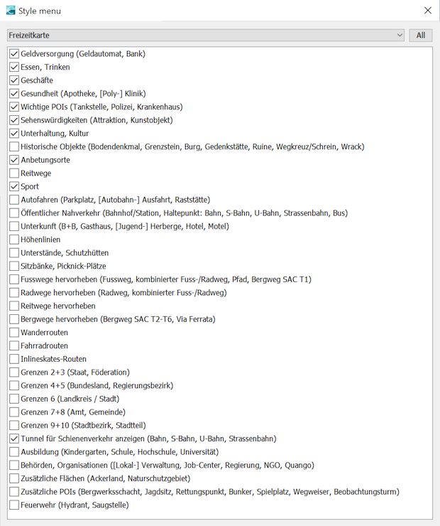Flächen:
| Kartenhintergrund | |
| 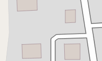 | Wohngebiet |

|
Handel, Einkaufszentrum oder Bereich mit überwiegend Einzelhandelsgeschäften |

|
Verwaltung, Büros |
| 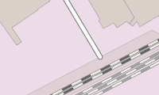 | Industrie- / Gewerbegebiet, überwiegend Werkstätten, Fabriken oder Lagerhallen; für Gleise und Bahnhöfe genutztes Eisenbahngelände |
| 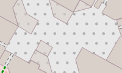 | Weg, Platz oder Straße auf der nur Fußgänger erlaubt sind, z.B. Fußgängerzone oder Einkaufspassage |
| 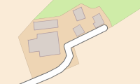 | Gehöft, landwirtschaftlich genutzte Flächen mit Gebäuden wie Häusern, Ställen, Fahrzeughallen, Futterspeichern usw. |

|
Acker |

|
Campingplatz, Stellplatz für Wohnmobile |
| 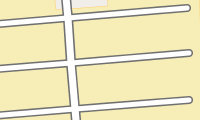 | Parkplatz (öffentlich) |
| 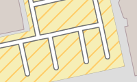 | Parkplatz (eingeschränkt, z.B. für Kunden) |
| 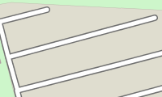 | Parkplatz (privat) |

|
Fahrrad Parkplatz |

|
Gebäude allgemein |
| 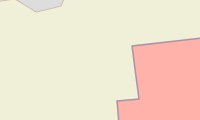 | Schule, Hochschule, Universität (Campus oder Gebäude) Öffentliche Gebäude |
| 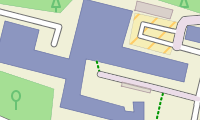 | Krankenhaus |
| 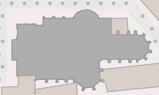 | Kirche |
| 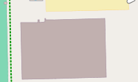 | Sporteinrichtung, Turnhallle |

|
Dach (transparent) |

|
Gewächshaus |

|
Ruine |

|
Flughafen, Vorfeld, Flugsteig |

|
Gefängnis |
| 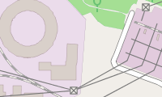 | Kraftwerk, dient der Erzeugung von Strom oder Wärme; Umspannwerk, Umspannstation |

|
Deponie, Aufschüttung, Müllhalde |

|
geplantes Baugebiet, Bauerwartungsland, unerschlossenes, für Bebauung vorgesehenes Land |

|
Baugebiet (aber auch Brachland) |

|
Rohstoffabbau oberirdisch, Steinbruch, Grube (Kies, Ton, ...), Tagebau |
| 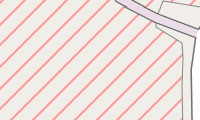 | Militärisch genutztes Gebiet, Kasernen, Truppenübungsplätze, usw. Gefahrenzone, Sperrgebiet |
| 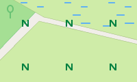 | Naturschutzgebiet |

|
Naturschutzgebiet mit Betretungsverbot |

|
Forst, forstwirtschaftlich genutzer Wald; differenziert nach Misch-, Laub- oder Nadelwald |
| 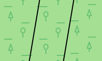 | Naturwald, keine forstwirtschaftliche Nutzung; differenziert nach Misch-, Laub- oder Nadelwald |

|
Friedhof, differenziert nach Religionen |
| 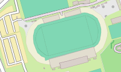 | Sportanlage, Stadion |
| 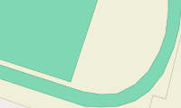 | Spielfeld, Laufbahn |
| 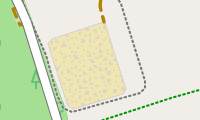 | Reitplatz |

|
Zoologischer Garten, Tierpark, auch Freizeitpark, Themenpark, Museum |

|
Kleingarten, Schrebergarten, Grabeland |

|
Park, Grünanlage, Hundepark |
| 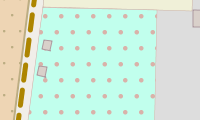 | Spielplatz für Kinder |
| 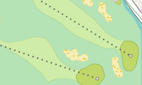 | Golfanlage |
| 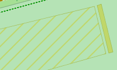 | Driving Range (Golf) |
| Wiese, Grünflächen | |
| 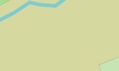 | Heide |

|
Unkultiviertes Land, Unterholz, Busch, Gebüsch |
| 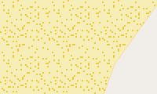 | Boden mit Sand bedeckt, kein oder nur spärlicher Bewuchs |

|
Weinberg, Wengert |

|
Obstplantage, Obstgarten, Gemüseanbau, Anpflanzung von Bäumen oder Sträuchern zur Lebensmittelproduktion |

|
Wasser allgemein, Meer, Seen, Teiche, Flüsse, Speicherbecken usw. |

|
Rückhaltebecken |

|
Jachthafen, Liegeplatz für Jachten und Motorboote |
| 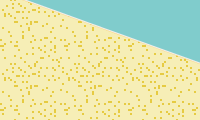 | Strand |
| 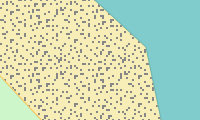 | Strand mit Kies |

|
Gletscher, Gebiet, das ganzjährig mit Eis bedeckt ist; oder Eislaufbahn |

|
Fels |
| Geröll | |

|
Alm, Bergwiese, Matten, Bereich oberhalb der Baumgrenze |

|
Feuchtwiese, auch Salzwiese |
| 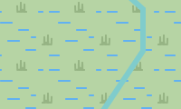 | Schilf, Röhricht, Binsen |
| 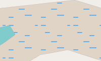 | Sumpf oder offener Sumpf |
| 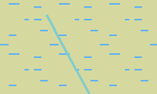 | Moor, Nieder-, Hoch- oder Strangmoor |

|
Schlick |

|
Saline (zur Salzgewinnung) |

|
Watt |
| 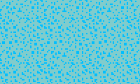 | Riff |
Anmerkungen:
- Kulturland (Ackerland) ist in vielen Ländern die am häufigsten vorkommende Fläche (in Deutschland 33%).
- Wald (Naturwald, Forst) bedeckt in vielen Ländern bedeutende Flächen (in Deutschland 30%) und ermöglicht somit eine gute Groborientierung.
- (Gitter-) Schraffuren werden für Bereiche mit Zugangseinschränkungen (mil. Bereich, Baugebiete, Kraftwerk, Schrebergarten, Privatparkplatz, ...) verwendet.
Straßen und Wege:
| Straßen: | |
| 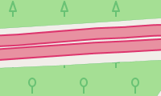 | Autobahn, Straße mit baulich getrennten Fahrtrichtungen (im allgemeinen Grünstreifen) und besonderen Nutzungsbeschränkungen (Einbahnstraße, Verbot für Fußgänger und Radfahrer). Typischerweise zwei Fahrspuren je Fahrtrichtung oder mehr und ein Standstreifen. |
| 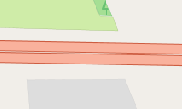 | Autobahnähnliche Straße, aber keine Autobahn. |

|
Bundesstraße, Hauptverbindungsstraße unter zentraler Verwaltung mit besonderer Kennzeichnung, die meist größere Städte verbindet und dem überregionalen Verkehr dient. Außerdem:Straßen mit übergeordneter Verkehrsbedeutung. |
| 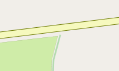 | Land- oder sehr gut ausgebaute Kreisstraße (oder Auffahrt hierauf) Straße mit Mittellinie, die kleinere Städte oder größere Orte verbindet. Die Straße dient dem zwischenregionalen Verkehr. |
| 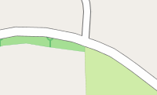 | Kreisstraße, sehr gut ausgebaute Gemeindeverbindungsstraße, die in erster Linie regionalen Verkehrsbedürfnissen dient. Wenig befahrene Vorfahrtstraße, die kleinere Orte verbindet. Innerstädtische Vorfahrtstraßen mit Durchfahrtscharakter. |
| 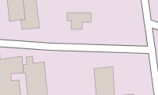 | Nebenstraße, öffentlich befahrbare Nebenstraße mit einfachstem Ausbauzustand, typischerweise keine Mittellinie. Z.B. Gemeindestraßen mit Verbindungscharakter, die zu schmal sind, um als Kreisstraße zu gelten. |
| 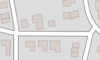 | Wohngebietsstraße, Straße an und in Wohngebieten, die keiner anderen Straßenklasse angehört. |

|
Erschließungsstraße oder -weg, Zugang / Zufahrt zu Einrichtungen wie Sportanlagen, Stränden, Autobahnraststätten oder allgemein zu Gebäuden. |

|
Verkehrsberuhigter Bereich, eine Straße in der auf spielende Kinder aufgepasst werden muss, Fußgänger bevorzugt behandelt werden und nur Schrittgeschwindigkeit erlaubt ist. |
| 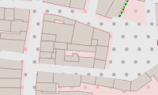 | Fußgängerstraße, Weg oder Straße auf der nur Fußgänger erlaubt sind (z.B. typisch für Einkaufspassagen). |
| 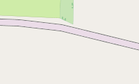 | Straßen und Wege mit generellem Nutzungsverbot bzw. für den Kraftverkehr: - Die Benutzung ist generell nicht erlaubt oder nicht möglich. - Der Privateigentümer erlaubt die Benutzung in der Regel nicht. - Die Benutzung ist für Kraftfahrer nicht erlaubt oder nicht möglich. |

|
Straßen und Wege mit Nutzungsbeschränkung für den Kraftverkehr: - Die Benutzung ist nur zur Anlieferung von Waren zum Kunden erlaubt. - Die Benutzung ist nur erlaubt, wenn das Ziel an dieser Straße oder Weg liegt. |
| 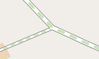 | Straßen und Wege mit Nutzungsbeschränkung für den Kraftverkehr: - Die Benutzung ist nur für den landwirtschaftlichen Verkehr erlaubt. - Die Benutzung ist nur für den forstwirtschaftlichen Verkehr erlaubt. |
| Sonstiges: | |

|
Tunnel |

|
Brücke, Brückenbauwerk |

|
Im Bau befindliche Strassen und Wege |

|
Notfallspur, Notbremsweg (grau) |
| 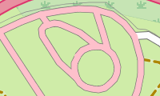 | Rennstrecke |
| Rad-, Fuß-, Reitwege, Pfade: Der Weg ist nicht breit genug für ein Fahrzeug. |
|
| 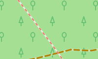 | Treppen, Treppen auf Fuß- oder Wanderwegen nur für Fußgänger. |
| 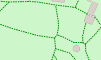 | Allgemeiner Fußweg, hauptsächlich für Fußgänger. |

|
Allgemeiner Radweg, hauptsächlich für Radfahrer. |

|
Kombinierter Rad- und Fußweg, gemeinsame Nutzung durch Radfahrer und Fußgänger. |
| 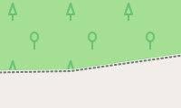 | Reitweg, ein Weg nur für Reiter. |

|
Allgemeiner Weg oder Pfad, hier in der Bedeutung von Wanderweg / Trampelpfad; nicht breit genug für Fahrzeuge. |
| Wirtschafts-, Feld- oder Waldwege. Der Weg ist breit genug für ein Fahrzeug. Es werden drei Ausbauformen unterschieden: |
|

|
Güteklasse 1, befestigter Weg (Asphalt, Beton, Pflastersteine, etc.). |
| 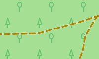 | Güteklassen 2, 3 (sowie 0) 2 = Befestigter Weg (Schotter oder andere verdichtete Untergründe). 3 = Befestigter oder ausgebesserter Weg, der harten und weichen Untergrund enthält (z.B. Feinschotter-, Sand- oder Erdweg). 0 = Für den Weg ist keine Güteklasse angegeben. |
| 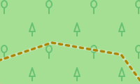 | Güteklassen 4, 5 4 = Unbefestigter Weg, hauptsächlich weiche Materialien, Pflanzenwuchs entlang der Spurmitte (z.B. Gras-, Sand- oder Erdweg). 5 = Unbefestigter Weg, Oberfläche besteht aus Sand, Erde etc., oft nur Abdruck im Gras, teilweise schwer von umgebendem Gelände unterscheidbar. |
| (Berg-)Wanderwege. Es werden vier Schwierigkeitsgrade unterschieden: |
|

|
Wanderweg, T1 T1 = Wanderweg |

|
Bergwanderweg, T2 oder T3 T2 = klassischer Bergweg T3 = anspruchsvoller Bergweg |

|
Alpiner Wanderweg, T4, T5 oder T6 (Alpinwandern; erfordert entsprechende Erfahrung) T4 = alpiner Wanderweg T5 = anspruchsvoller, alpiner Wanderweg T6 = schwieriger, alpiner Wanderweg |
| 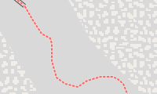 | Klettersteig (gesicherter Kletterweg) Klettersteig (Via Ferrata) = gesicherter Kletterweg |
Anmerkungen:
- Freizeitaktivitäten im Gebirge erfordern entsprechende Erfahrung und bergen Gefahren. Alleine mit dieser Karte sollte keine Bergtour geplant werden.
- Bei Wirtschafts-, Feld- und Waldwegen der Güteklassen 2-5 wird generell davon ausgegangen, daß sie für den Kraftverkehr nicht geeignet sind. Nutzungseinschränkungen werden deshalb nicht gesondert ausgewiesen.
Eisenbahnen und Seilbahnen:
| Eisenbahnen: | |

|
Eisenbahn, Hauptgleis. Beinhaltet Standseilbahnen. |
| 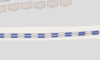 | S-Bahn/U-Bahn |
| 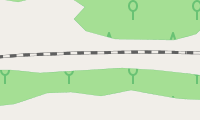 | Schmalspurbahn |

|
Service Gleise, beinhaltet auch Rangiergleise, Industriegleise, Strecken im Bau und nicht mehr in Betrieb |

|
Bahntunnel, Tunnel verschiedener Bahnen |

|
Straßenbahn, Spurbus, nutzen den Verkehrsraum zu großen Teilen zusammen mit dem Individualverkehr. |

|
Monorail |
| Seil- und andere Bahnen: | |

|
Pendel- und Gondelbahn, Kabinenbahnen mit entweder 2 grösseren Kabinen, die gegenläufig fahren, oder Gondelbahnen mit vielen kleinen Kabinen auf einem Umlaufseil, sowie Sesselifte |
| 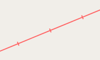 | Skilift, beinhaltet alle Formen von Schleppliften für Skifahrer |
| 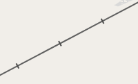 | Materialseilbahn, Personentransport normalerweise nicht erlaubt. |
| Fähren: | |

|
Fähre, Passagierschiff, route einer Fährlinie auf See oder in Binnengewässern |
Weitere linienförmige Objekte:

|
Stromleitung, Hochspannung |

|
Stromleitung, Nieder- oder Mittelspannung |
| Wallhecke, Knick | |

|
Baumreihe |
| Zaun, Mauer | |

|
Grenzen, Die Politische Grenzen werden in verschiedenen Farben dargestellt:Land, Bundesland, Regierungsbezirk ,(Land-) Kreis, kreisfreie Stadt, Gemeinde, Stadtteil. |

|
Wehr, eine Barriere, die durch einen Fluss gebaut ist. Das Wasser kann durchaus weiterhin drüber hinweg fließen. |
| Staudamm, Staumauer, Absperrbauwerks einer Talsperre oder einer Stauanlage | |
| Deich, künstlicher Damm zwecks Hochwasserschutz. | |
| Böschung, Abhang | |
| Klippe | |
| Höhenlinien Abstände 500m, 100m, 20m |
Routen:
Bitte aktivieren Sie nur einen Routentyp auf einmal, um Verwirrung zu vermeiden. Wenn vorhanden wird die Route mit Name und Nummer angezeigt. Die Route wird jeweils in der Farbe des höchstwertigen Netzwerks angezeigt. Der Name wird ebenfalls aus dem höchstwertigen Netzwerk entnommen. Es kann nur ein Name angezeigt werden. Es werden jedoch alle vorhandenen Nummern angezeigt.
Routen für Fahrrad- und MTB-Fahrer:

|
Mountain Bike (MTB) Route |

|
Lokale Radroute (Netzwerk "lcn") |

|
Regional Radroute (Netzwerk "rcn") |

|
Nationale oder internationale Radroute (Netzwerk "ncn" oder "icn") |
Routen für Wanderer:
|
|
Lokale Wanderroute (Netzwerk "lwn") |
|
|
Regional Wanderroute (Netzwerk "rwn") |
|
|
Nationale oder internationale Wanderroute (Netzwerk "nwn" oder "iwn") |
Routen für Inline-Skater:
|
|
Lokale Inline-Skating-Route (Netzwerk "local") |
|
|
Regional Inline-Skating-Route (Netzwerk "regional") |
|
|
Nationale Inline-Skating-Route (Netzwerk "national") |
Points-Of-Interest (POIs):

|
Essen & Trinken allgemein | Bar | |
| Biergarten | Café | ||

|
Kneipe | Schnellimbiss | |

|
Eisdiele | 
|
Restaurant |

|
Hotel und Restaurant | Hotel, Motel | |

|
Gasthaus (Pension, Herberge, Bed & Breakfast) | Picknick | |
| Grillplatz | 
|
Parkbank | |
| (Touristen-) Information | 
|
Wegweiser | |

|
Unterstand | offene Schutzhütte | |
| Schutzhütte (Biwak) | unbewirtschaftete Schutzhütte (Selbstversorger) | ||
| bewirtschaftete Schutzhütte (Berghütte) | bewirtschaftete Schutzhütte und Restaurant (Berghütte) | ||

|
Kunstzentrum | Spielcasino | |

|
Kino | 
|
Zentrum für Gemeinschaften |
| Bibliothek, Bücherei | Nachtclub, Disco | ||
| Theater | 
|
Turm für Beobachtungen | |
| Aussichtspunkt | 
|
Sehenswürdigkeit | |

|
Kunstwerk | Museum | |
| Soziale Einrichtung | Recycling-Einrichtung | ||

|
Hochsitz | 
|
Polizeistation |
| Postamt | Gericht | ||

|
Rathaus | Botschaft | |

|
Geldautomat (oder Bank) | 
|
Bank |

|
Öffentliche Toilette | 
|
Apotheke |
| Krankenhaus | 
|
Klinik | |
| Flughafen | 
|
Landeplatz Hubschrauber | |
| Haltestelle (Bus, Straßenbahn) | 
|
U-Bahneingang | |

|
Bahnhof | Bahn, Haltepunkt (kein Bahnhof) | |
| Bahnhof (S-Bahn/U-Bahn) | S-Bahn, Haltepunkt (kein Bahnhof) | ||
| Bahnübergang | 
|
Seilbahnstation | |

|
Transport allgemein | 
|
Parkplatz |
| Parkplatz privat | 
|
Rastplatz, -stätte | |
| (Autobahn-) Ausfahrt | Autoverleih | ||

|
Carsharing-Station | 
|
(Auto-) Waschanlage |

|
Tankstelle | 
|
Ladestation |
| Fährterminal | Campingplatz | ||

|
Caravanplatz | 
|
(Fahrrad-) Parkplatz |
| Fahrradverleih | 
|
Einbahnstraße | |

|
(Straßen-) Poller | Umlaufsperre | |

|
Tor | 
|
Schranke |

|
(signifikante) Bäume | 
|
Leuchturm |

|
(Kommunikations-) Mast | 
|
(Strom-) Mast |
| (Strom-) Mast | Windrad | ||
| Quelle | 
|
(Wasser-) Reservoir | |

|
Wasserturm | 
|
Wehr |
| Trinkwasser | 
|
Springbrunnen | |
| Rettungspunkt | Hydrant (Löschwasser) | ||
| Saugstelle (Löschwasser) | 
|
Feuerwache | |
| Anbetungsort | 
|
christlicher Anbetungsort, z.B. Kirche | |

|
jüdischer Anbetungsort, z.B. Synagoge | muslimischer Anbetungsort, z.B. Moschee | |

|
Schlachtfeld | 
|
Burg, Schloss |

|
militärisches Fort | 
|
(militärischer) Bunker |

|
Ruine | 
|
Wrack, gesunkenes Schiff |

|
Ausgrabungsstätte | Denkmal | |
| Monument | Historisches Wegkreuz | ||

|
Historische Windmühle | 
|
Wassermühle |

|
Natürlicher Stein | 
|
Historischer Grenzstein |
| Trigonometrischer Punkt | 
|
Schacht, Bergwerk (vertikaler Zugang) | |
| Schacht, Bergwerk geschlossen (vertikaler Zugang) | Stollen (horizontaler Zugang) | ||
| Höhle | Pass | ||

|
Scharte (Joch, Sattel) | 
|
Berggipfel (meist mit Höhenangabe) |

|
Vulkan | 
|
allgemeiner Point-Of-Interest |

|
Bildung allgemein | 
|
Infrastruktur allgemein |

|
Grabstätte (bedeutende Person) | Regierung, Verwaltung, Organisationen | |
| Geschäft allgemein | 
|
Spirituosen | |

|
Getränke | 
|
Kaffee |
| Teegeschäft | 
|
Bäckerei | |

|
Metzgerei | Süßwaren | |
| Lebensmittel | Feinkost | ||
| Gemüse, Obst | 
|
verpackte Eisprodukte | |

|
Fisch | Warenhaus | |

|
(Einkaufs-) Zentrum | 
|
Supermarkt |

|
Kiosk, Zeitungen | 
|
Taschen, Koffer |
| Bekleidung | Schmuck | ||
| Schuhe | 
|
Uhren | |

|
Restposten | Schönheitssalon | |

|
Drogerie | 
|
Kosmetik |
| Frisör | 
|
Hörgeräte, Akustiker | |
| Sanitätshaus, Orthopädie Fachgeschäft | Optiker | ||
| Baumarkt | 
|
Florist | |

|
Garten-Center | 
|
Möbelhaus |

|
Computer | 
|
Elektronik |
| Hifi-Fachhändler | 
|
Mobiltelefone | |
| Fahrradgeschäft | Autohaus | ||
| (Auto-) Werkstatt | Reifenservice | ||
| Motorräder | 
|
Outdoor Shop | |

|
Sportgeschäft | Kunsthandel | |
| Musikgeschäft (Vinyl, CD, …) | Musikhaus (Instrumente) | ||
| Fotoladen | 
|
Buchhandlung | |
| Andenken | 
|
Schreibwaren, Papeterie | |

|
Kopierladen | 
|
Wäscherei |

|
Tierhandlung | 
|
Tabakwaren |

|
Spielzeuge | Reisebüro | |
| Sport allgemein | 
|
Stadium | |

|
Bowling & Kegeln | 
|
Bogenschießen |

|
Basketball | 
|
Beachvolleyball |

|
Boule, Boccia | 
|
Paddeln |

|
Schach | 
|
Klettern |

|
Tanzen | 
|
Reiten |

|
Fitness Studio | 
|
Golf |

|
Gymnastik | 
|
Minigolf |

|
Modelfliegen | 
|
Verschiedene Sportarten |

|
Rudern (Bootshaus / Einstieg) | Rennen, Leichtatletik | |

|
Tauchen | Schiessen | |

|
Skateboard | 
|
Fußball |

|
Schwimmen | 
|
Tischtennis |

|
Tennis | 
|
Volleyball |

|
Wasserpark | (Kinder-) Spielplatz |
Anmerkungen:
- Sehr viele POIs werden durch einen farbigen Kreis dargestellt. Weitere Informationen zu diesen POIs erhält man, indem man die Karte vergrößert.
- Freizeitaktivitäten im Gebirge erfordern entsprechende Erfahrung und bergen Gefahren. Alleine mit dieser Karte sollte keine Bergtour geplant werden.